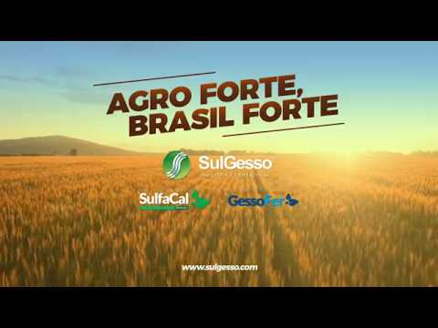
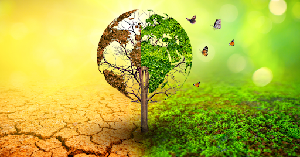
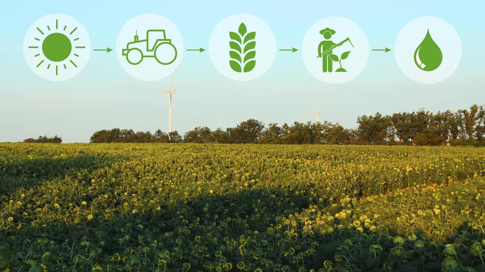

Agro forte, futuro sustentável: equilíbrio entre produção e meio ambiente

Agro Forte é um produto agrícola desenvolvido para fortalecer plantas, aumentando sua resistência a doenças e estresses ambientais. Ele atua como fertilizante ou bioestimulante, fornecendo nutrientes essenciais para maior produtividade. É indicado para diversas culturas, contribuindo para o desenvolvimento saudável e vigoroso das plantas.

Um futuro sustentável busca equilibrar desenvolvimento econômico, preservação ambiental e justiça social. Envolve o uso consciente de recursos naturais e a redução de impactos ambientais. Promove inovação e práticas que garantam qualidade de vida para as gerações presentes e futuras.

O equilíbrio entre produção e meio ambiente visa conciliar a produtividade agrícola e industrial com a conservação dos recursos naturais. Incentiva práticas responsáveis, como uso sustentável do solo, água e energia. Dessa forma, garante crescimento econômico sem comprometer a saúde do planeta.